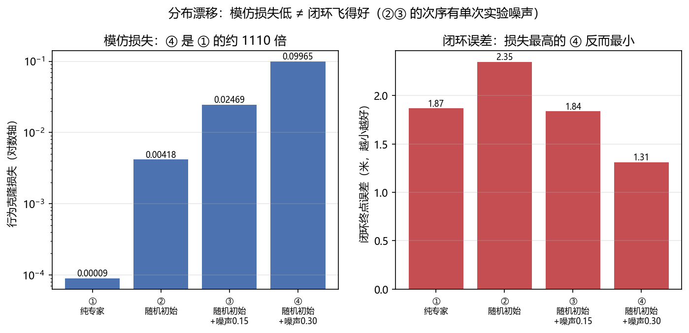
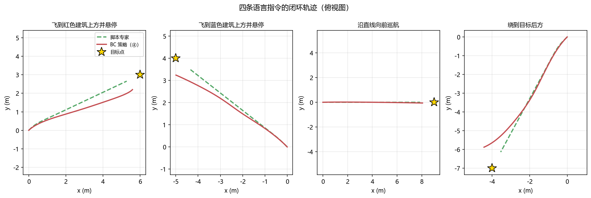

语言条件飞行控制：让无人机听懂人话¶
预计阅读：21 分钟 | 前置知识：VLA 架构基础、自然语言处理基础、无人机控制基础
1. 语言作为人机交互的自然接口¶
传统无人机操控依赖遥控器摇杆或预编程航点，操控者需要掌握专业的飞行技能。语言条件飞行控制（Language-Conditioned Flight Control）代表了一种根本性的人机交互范式转变：用户只需用自然语言描述意图，无人机就能理解并执行相应的飞行动作。
传统交互方式：
用户 → 遥控器 → 手动控制指令 → 无人机
要求：操控技能、空间意识、实时反应
语言条件交互：
用户 → "飞到那棵大树后面，降低高度观察" → VLA 模型 → 无人机
要求：自然语言描述能力
这种范式转变的意义不仅在于降低操控门槛，更在于解锁了全新的任务类型： - 远程指挥：在通信受限的环境中，发送简洁的语言指令比传输完整的控制序列更高效 - 高层任务描述：用户可以描述目标而非过程（"搜索幸存者"而非"向北飞 50 米然后..."） - 多机协同：一条指令可以同时指挥多架无人机
这一方向的两个代表是 UAV-Flow 和 VLN-Pilot。
2. 模仿学习基础：无人机版¶
在深入具体模型之前，有必要理解无人机 VLA 的核心训练范式——模仿学习（Imitation Learning）。
2.1 什么是模仿学习？¶
模仿学习（也称为行为克隆，Behavioral Cloning）是一种从专家示范中学习策略的方法。在无人机场景中：
专家示范数据 = {
(观测₁, 语言指令, 动作₁),
(观测₂, 语言指令, 动作₂),
...
(观测ₙ, 语言指令, 动作ₙ)
}
学习目标：π(a|o, l) ≈ π_expert(a|o, l)
其中：
o = 视觉观测（摄像头图像）
l = 语言指令
a = 无人机控制动作
2.2 无人机模仿学习的特殊挑战¶
| 挑战 | 说明 | 应对策略 |
|---|---|---|
| 分布偏移 | 训练数据来自专家，部署时模型可能犯错导致偏离训练分布 | DAgger、数据增强 |
| 视角差异 | 专家视角可能与无人机摄像头视角不同 | 第一人称视角数据采集 |
| 延迟动作 | 语言指令与对应动作之间可能有时间延迟 | 时间对齐、因果建模 |
| 多模态性 | 同一语言指令可能对应多种合理的飞行策略 | 条件变分建模 |
| 安全约束 | 飞行数据中的危险轨迹不应被模仿 | 安全过滤、约束学习 |
2.3 语言 grounding¶
语言 grounding（语言接地）是指将自然语言描述映射到具体的感知和动作。在无人机场景中，这包括：
- 物体接地：将"那棵大树"映射到图像中的特定区域
- 空间关系接地：将"大树后面"映射到 3D 空间中的位置
- 动作接地：将"降低高度"映射到具体的控制指令
- 隐含约束接地：将"观察"映射到特定的飞行模式（悬停、盘旋等）
graph LR
A["'飞到那棵大树后面'"] --> B["语言解析"]
B --> C1["目标物体: 大树"]
B --> C2["空间关系: 后面"]
B --> C3["隐含动作: 到达+面对"]
C1 --> D["视觉定位"]
C2 --> E["3D 空间推理"]
C3 --> F["动作规划"]
D --> G["融合模块"]
E --> G
F --> G
G --> H["飞行控制指令"]3. UAV-Flow：Flying-on-a-Word¶
论文：UAV-Flow Colosseo: A Real-World Benchmark for Flying-on-a-Word UAV Imitation Learning 来源：arXiv:2505.15725, 2025 GitHub：buaa-colalab/UAV-Flow（173 stars） 性质：基准论文（首个真实世界的语言条件细粒度无人机控制基准），不是某个新模型的论文
3.1 核心思想：Flying-on-a-Word 这个任务¶
论文的贡献起点是把问题重新划一遍。此前的工作大多聚焦高层规划与长时程导航（"去那个街区"），这篇转向语言引导的细粒度轨迹控制：无人机根据语言指令执行短程、反应式的飞行动作。
论文把这个问题形式化为 Flying-on-a-Word（Flow） 任务，并提出用无人机模仿学习来解决：让无人机通过模仿专家飞手的轨迹来学细粒度控制策略，每条轨迹与原子化的语言指令配对。
这里的关键词是"原子化"。Flow 任务的指令不是长句任务描述，而是短、具体、对应一个即时动作的语言片段——这也正是"逐词飞行"这个名字的来源。
3.2 论文做了哪四件事¶
摘要列出的交付物有四项，注意这是一篇基准论文，四项都是"基础设施"而不是"模型改进"：
- 任务形式化（task formulation）：把 Flow 定义清楚
- 大规模数据集：在多样环境中采集，专家飞行轨迹配原子语言指令
- 可部署的控制框架：直接可上机的推理入口，论文声称支持无 sim-to-real gap 的直接部署
- 仿真套件：用于系统性评测
论文在 UAV-Flow 上做了扩展实验，同时评测 VLN 与 VLA 两条范式；结论是 VLA 模型优于 VLN 基线，并且指出在细粒度 Flow 场景下空间接地（spatial grounding）是决定性的。
论文采用 OpenVLA 与 Pi-0 作为基础 VLA 模型；对外发布的权重名为 OpenVLA-UAV（放在 wangxiangyu0814/OpenVLA-UAV），这是权重仓库名，不是论文里的新架构名。
3.3 数据集的形状¶
数据集在 Hugging Face 上以 wangxiangyu0814/UAV-Flow 发布。它的实际形态和"图像 + 轨迹 + 指令"三目录式的直觉不一样：54 个 train-*.parquet 分片，字段是 [id, frame_idx, image, log]——log 是原始遥测序列，指令与轨迹信息都编码在其中，而不是单独抽成 instructions.jsonl。
数据采集的关键点是：轨迹来自真实环境中的专家飞手，而不是仿真里的控制器。这正是这篇论文敢说"支持无 sim-to-real gap 的直接部署"的依据。
3.4 怎么评测¶
评估这条线在真实世界里的做法是比较生成轨迹与参考轨迹的相似度：仓库里的入口是先用 openvla_act.py + batch_run_act_all.py 跑出动作序列，再用 metric.py 算 nDTW（normalized Dynamic Time Warping），这是 VLN 领域常用的轨迹对齐指标，而不是"任务完成率 / 位置误差"这类绝对量。
值得记住的是论文自己承认的局限：在真实场景里采用定量评测指标本身就很困难。这句话比任何一张结果表都更该被引用——它说明这个领域目前的定量比较能力是有限的。
3.5 论文报告的结论¶
论文的结论是定性的两条：
- VLA 模型优于 VLN 基线——在细粒度 Flow 任务上，直接输出动作的 VLA 比"先理解再导航"的 VLN 更合适
- 空间接地（spatial grounding）是决定性的——细粒度场景里，能不能把语言"钉"到具体的空间位置，是成败关键
摘要没有给出按指标拆分的数字表。
3.6 开源产物¶
仓库 buaa-colalab/UAV-Flow 有两条线：
OpenVLA-UAV/：训练与推理侧的 OpenVLA 改造（内含prismatic/与vla-scripts/），微调入口bash vla-scripts/finetune_uav.sh，推理入口python vla-scripts/openvla_act.pyUAV-Flow-Eval/与dataset_tools/：评测侧与数据侧工具
权重与数据都在 Hugging Face：数据 wangxiangyu0814/UAV-Flow，权重 wangxiangyu0814/OpenVLA-UAV。
4. VLN-Pilot：GPS 拒止环境下的室内无人机语言导航¶
论文：VLN-Pilot: Large Vision-Language Model as an Autonomous Indoor Drone Operator 来源：arXiv:2602.05552, 2026 核心创新：VLM 作为室内无人机操作员
4.1 问题背景：GPS 拒止环境¶
在室内、地下、城市峡谷等 GPS 信号不可用的环境中，无人机无法依赖 GPS 进行定位和导航。传统方案依赖 SLAM（同时定位与地图构建）技术，但 SLAM 在纹理缺失、光照变化剧烈的环境中表现不佳。
VLN-Pilot 提出了一个新颖的方案：直接使用 VLM 的视觉理解能力替代 GPS 和 SLAM，通过语言指令引导无人机在 GPS 拒止环境中导航。
4.2 VLM-as-Operator 范式¶
VLN-Pilot 的核心范式是 VLM-as-Operator（VLM 作为操作员）：将 VLM 视为一个能够理解视觉场景和语言指令的"虚拟操作员"，直接从摄像头图像生成飞行控制指令。
graph TB
subgraph "传统方案"
T1["摄像头"] --> T2["SLAM 模块"]
T2 --> T3["地图构建"]
T3 --> T4["路径规划"]
T4 --> T5["控制器"]
T6["GPS"] -.->|"不可用"| T4
end
subgraph "VLN-Pilot 方案"
V1["摄像头图像"] --> V3["VLM"]
V2["语言指令"] --> V3
V3 --> V4["飞行控制指令"]
V4 --> V5["安全过滤"]
V5 --> V6["控制器"]
end
style T6 fill:#ffcccc,stroke-dasharray: 5 54.3 架构设计¶
VLN-Pilot 的架构分为三个层次：
感知层：处理来自无人机前置和下视摄像头的图像，提取视觉特征。
推理层：VLM 核心模块，接收视觉特征和语言指令，进行场景理解和动作推理。
控制层：将 VLM 的输出转换为底层飞行控制指令，并进行安全过滤。
VLN-Pilot 详细架构：
[前置摄像头] --→ [视觉编码器] --→ 视觉 tokens
|
[下视摄像头] --→ [视觉编码器] --→ 视觉 tokens
|
[语言指令] ------> [Tokenizer] --------+--→ [VLM Backbone]
|
[高度/速度状态] -> [状态编码器] --------+
|
↓
[动作解码器]
|
[安全过滤器]
|
[PID 控制器]
|
[电机指令]
4.4 室内导航的特殊挑战¶
室内环境对 VLA 模型提出了独特的挑战：
| 挑战 | 说明 | VLN-Pilot 的应对 |
|---|---|---|
| 狭窄空间 | 走廊、门口宽度有限 | 安全过滤器限制激进动作 |
| 视觉退化 | 白墙、弱纹理区域 | 多视角融合，下视摄像头辅助 |
| 动态障碍 | 行人、开门 | 实时视觉更新，保守策略 |
| 光照变化 | 窗户强光、暗室 | 视觉编码器的鲁棒性训练 |
| 指令歧义 | "左边的房间"可能有多个 | 上下文推理，必要时请求澄清 |
4.5 语言指令的层次结构¶
VLN-Pilot 处理的语言指令具有层次结构：
高层指令（任务级）：
"搜索三楼的所有房间，找到红色文件柜"
↓ 分解
中层指令（导航级）：
"进入左边的房间" → "沿着走廊前进" → "在第三个门口右转"
↓ 分解
低层指令（控制级）：
"向前飞 3 米" → "左转 90 度" → "降低高度 0.5 米"
VLM 的强大之处在于可以直接理解高层指令，并根据视觉上下文自动分解为中层和低层指令。
4.6 与 UAV-Flow 的对比¶
| 维度 | UAV-Flow | VLN-Pilot |
|---|---|---|
| 任务尺度 | 短程、反应式细粒度控制（Flow） | 室内导航 |
| 基础模型 | OpenVLA 与 Pi-0 | VLM（具体型号未核实） |
| 语言 grounding | 原子语言指令配专家轨迹 | 层次化指令理解（未核实） |
| 安全机制 | 未在摘要中说明 | 显式安全过滤器（未核实） |
| 定位依赖 | 未在摘要中说明 | 无 GPS，纯视觉（未核实） |
| 数据来源 | 真实世界专家飞行轨迹 | 仿真 + 真实室内（未核实） |
| 开源程度 | 代码 + 数据 + 权重均公开 | 未核实 |
这张表的读法：VLN-Pilot 一列除题名外尚未逐条回原文核，标"未核实"的格按字面读时请自行保留。UAV-Flow 一列中"数据来源 = 真实世界"是从摘要 "the first real-world benchmark" 与 "mimicking expert pilot trajectories" 直接得到的。
5. 语言条件控制的技术实现¶
5.1 语言编码策略¶
将自然语言转换为模型可理解的表征，有几种常见策略：
graph TB
A["语言编码策略"] --> B["Token 编码"]
A --> C["Sentence Embedding"]
A --> D["层次化编码"]
B --> B1["直接使用 LLM Tokenizer"]
B --> B2["优点: 保留词序信息"]
B --> B3["缺点: 序列长，计算量大"]
C --> C1["使用 Sentence-BERT 等"]
C --> C2["优点: 固定长度，高效"]
C --> C3["缺点: 丢失词序信息"]
D --> D1["多粒度编码（词+短语+句子）"]
D --> D2["优点: 丰富语义"]
D --> D3["缺点: 架构复杂"]大多数现代 VLA（包括 UAV-Flow 和 VLN-Pilot）采用 Token 编码策略，直接利用预训练 LLM 的 Tokenizer。
5.2 语言-视觉对齐¶
语言条件控制的核心挑战之一是将语言描述与视觉观测对齐。这包括：
- 物体级对齐："红色屋顶" → 图像中红色区域的特征
- 空间关系对齐："左边" → 图像左侧区域
- 状态对齐："已经到达" → 当前位置与目标位置的距离
5.3 从语言到动作的映射¶
语言到动作的映射通常不是直接的，而是经过多步推理：
"飞到红色屋顶后面"
↓ 语义解析
目标: 红色屋顶
空间关系: 后面
↓ 视觉定位
屋顶位置: 图像坐标 (320, 240)
深度估计: 50 米
↓ 3D 推理
"后面"的含义:
- 从当前位置看，屋顶的远端
- 需要绕过屋顶
↓ 路径规划
子目标序列:
1. 飞向屋顶 (接近)
2. 绕过屋顶 (规避)
3. 到达后方 (到达)
↓ 动作生成
控制指令: (vx, vy, vz, ωz) 连续值
6. 语言条件飞行控制的应用场景¶
6.1 搜索与救援¶
场景：地震后搜索被困人员
指挥员指令序列：
1. "飞到倒塌的建筑群上空"
2. "搜索是否有生命迹象"
3. "发现幸存者后悬停并报告位置"
4. "引导救援队到达"
VLA 模型需要理解：
- "倒塌的建筑群" → 视觉识别废墟
- "生命迹象" → 热成像或视觉特征
- "悬停" → 维持当前位置
- "引导" → 生成救援队可跟随的路径
6.2 农业巡检¶
场景：农田病虫害巡检
农户指令：
1. "检查玉米田的东边区域"
2. "找到叶片发黄的区域"
3. "降低高度近距离拍照"
4. "记录位置并返回"
VLA 模型需要理解：
- "玉米田" → 作物识别
- "东边" → 方向理解
- "叶片发黄" → 病害视觉特征
- "近距离" → 高度控制语义
6.3 建筑巡检¶
场景：高层建筑外墙检查
工程师指令：
1. "从楼顶开始，沿着外墙缓慢下降"
2. "检查每层窗户是否有裂缝"
3. "发现裂缝时暂停并拍摄"
4. "记录裂缝位置"
VLA 模型需要理解：
- "沿着外墙" → 飞行路径约束
- "缓慢" → 速度语义
- "裂缝" → 视觉缺陷检测
- "暂停" → 悬停指令
7. 2026 年的空中 VLN：两份路线图¶
§3 与 §4 是两个具体模型。2026 年 4 月，这个子领域在六天内出了两份综述，各自把同一片地形画了一遍。它们的分类轴不同，合起来可以当索引读。
[arXiv'26.04] Vision-Language Navigation for Aerial Robots: Towards the Era of Large Language Models（arXiv:2604.07705，2026-04-09）把交互范式作为第一层切分：单条指令与对话式，并以此作为两条基础轴。方法层面分五类：序列到序列与注意力方法、端到端 LLM/VLM 方法、分层方法、多智能体方法、对话式导航方法。它同时对评测基础设施（数据集、仿真平台、指标）做了批判性评估，指出四项缺口：规模、环境多样性、真实世界落地程度、指标覆盖。最后收敛到七个开放问题，第一个是长时程指令 grounding。
[arXiv'26.04] Vision-and-Language Navigation for UAVs: Progress, Challenges, and a Research Roadmap（arXiv:2604.13654，2026-04-15）切的是技术代际：从早期模块化与深度学习方法，到由大基础模型驱动的当代智能体系统，其中明确把"生成式世界模型与 VLA 架构的融合"列为新出现的一类，理由是它提供物理落地的推理。部署侧它列了四条拦路虎：sim-to-real 落差、动态户外环境的稳健感知、语言歧义下的推理、大模型在受限硬件上的高效部署。路线图指向两个前沿：多智能体集群协同、空地协同机器人。
两份综述在同一处给出负面结论：评测基础设施不够用。 2604.07705 说的是四项缺口，2604.13654 说的是路线图里最难的一块，09 篇 §5 从基准侧给出的是同一件事的第三种说法（协议互不兼容，还伴随一次撞名）。三处独立得出同一结论，这一条可以当作已经确立的事实，而不是某篇文章的观点。
它对本篇的含义，是 §3、§4 这两个模型所处的位置变了。 两者都是"单条指令 + 端到端"这一格里的工作；2026 年往前推的两条路（分层、对话式）在这一格里看不到。2604.07705 的第三类"分层方法"，和 04 篇 的 LLM 规划器路线是同一件事的两种叫法；而 2604.13654 点出的"世界模型 + VLA"，展开在 10 篇 §9。
| 切分轴 | 2604.07705 | 2604.13654 |
|---|---|---|
| 第一层 | 交互范式（单指令 / 对话） | 技术代际（模块化 → 基础模型驱动） |
| 方法分类 | 五类架构 | 按演进阶段 |
| 独有落点 | 七个开放问题 | 多智能体集群、空地协同 |
| 共同的负面结论 | 评测基础设施不够用 | 同 |
8. 关键论文¶
-
[arXiv'25.05] UAV-Flow Colosseo — UAV-Flow Colosseo: A Real-World Benchmark for Flying-on-a-Word UAV Imitation Learning

 真实世界细粒度语言控制基准；评测 VLN 与 VLA 两条范式
真实世界细粒度语言控制基准；评测 VLN 与 VLA 两条范式 -
[arXiv'26.02] VLN-Pilot — VLN-Pilot: Large Vision-Language Model as an Autonomous Indoor Drone Operator
 GPS 拒止室内导航，VLM-as-Operator
GPS 拒止室内导航，VLM-as-Operator -
[arXiv'26.04] Vision-Language Navigation for Aerial Robots: Towards the Era of Large Language Models
 五类架构 + 交互范式两轴，七个开放问题
五类架构 + 交互范式两轴，七个开放问题 -
[arXiv'26.04] Vision-and-Language Navigation for UAVs: Progress, Challenges, and a Research Roadmap
 代际划分 + 四条部署拦路虎
代际划分 + 四条部署拦路虎 -
[arXiv'24.06] OpenVLA — OpenVLA: An Open-Source Vision-Language-Action Model
 开源 7B VLA
开源 7B VLA
9. 动手验证：模仿损失低，为什么闭环反而飞不好？¶
2.1 节提到模仿学习的核心难题是分布漂移。这一节把它量出来：用脚本专家采数据、训一个语言条件策略，然后对比四组数据配置的模仿损失和闭环终点误差。
9.1 策略与专家¶
import torch, torch.nn as nn, torch.nn.functional as F
class LangPolicy(nn.Module):
"""观测 + 语言 -> 4 维动作。两个编码器各自升维后拼接再融合。"""
def __init__(self, obs_dim=12, txt_dim=len(vocab), h=128, act_dim=4):
super().__init__()
self.obs_enc = nn.Sequential(nn.Linear(obs_dim, h), nn.SiLU())
self.txt_enc = nn.Sequential(nn.Linear(txt_dim, h), nn.SiLU(), nn.Linear(h, h))
self.fuse = nn.Sequential(nn.Linear(2 * h, h), nn.SiLU(),
nn.Linear(h, h), nn.SiLU(), nn.Linear(h, act_dim))
def forward(self, obs, txt):
return torch.tanh(self.fuse(torch.cat([self.obs_enc(obs), self.txt_enc(txt)], -1)))
def expert(env, goal, kp=0.30, kd=0.70, ka=3.0, tilt_max=0.6):
"""脚本专家 = 串级控制：位置环 -> 期望倾角 -> 姿态内环 -> 角速率"""
tilt_des = torch.stack([
torch.clamp(kp * (goal[:, 0] - env.p[:, 0]) - kd * env.v[:, 0], -tilt_max, tilt_max),
torch.clamp(kp * (goal[:, 1] - env.p[:, 1]) - kd * env.v[:, 1], -tilt_max, tilt_max)], -1)
a = torch.zeros(env.n, 4)
a[:, 0] = 0.5 + 0.10 * (goal[:, 2] - env.p[:, 2]) - 0.30 * env.v[:, 2] # 高度环
a[:, 1:3] = ka * (tilt_des - env.rpy[:, :2]) # 姿态内环
return a.clamp(-1, 1)
# 训练循环：随机采一个时间步做单步 BC（minibatch 128）
loss = F.mse_loss(pol(O[b, t], Txt[b, t]), A[b, t])
opt.zero_grad(); loss.backward(); opt.step()
语言指令用字符袋 one-hot 编码 —— 这是最粗糙的文本表示，只为演示"语言作为条件"这件事本身；真实 VLA（如 UAV-Flow 用的 OpenVLA 基座）走的是预训练 LLM 自己的 tokenizer 与词嵌入，而不是另配一个文本编码器。
四条指令：飞到红色建筑上方并悬停 / 飞到蓝色建筑上方并悬停 / 沿直线向前巡航 / 绕到目标后方。
9.2 本地实测结果¶
先确认专家自己是合格的（专家都到不了位，BC 就不可能到位）：
再看四组数据配置（每组 1500 轮、同一个随机种子）：
四指令闭环最终距目标 (m) 红建筑 蓝建筑 向前巡航 目标后方
[① 纯专家数据 ] BC损失 0.00009 | 1.64 2.52 1.82 1.49 | 平均 1.87 m
[② +随机初始状态 ] BC损失 0.00418 | 2.34 1.73 4.16 1.16 | 平均 2.35 m
[③ +随机初始+动作噪声0.15 ] BC损失 0.02469 | 1.97 0.78 1.59 3.00 | 平均 1.84 m
[④ 噪声加大到0.30 ] BC损失 0.09965 | 1.62 1.11 1.25 1.26 | 平均 1.31 m
这是本节最值得记住的一行：④ 的模仿损失是 ① 的约 1100 倍，闭环误差反而从 1.87 m 降到 1.31 m —— 已经接近脚本专家自己的 1.13~1.27 m。
只有 ① 是"照着专家的轨迹、在同分布的初始状态上"训练的，模仿损失低到 9e-5；但也正因为训练分布太窄，策略一旦偏离专家轨迹就没有对应数据，误差累积、越飞越偏。②③④ 通过随机化初始状态、给专家动作加噪声，人为把"飞偏了"的状态塞进训练集 —— 这正是 DAgger 类方法的核心思想。
注意：
②比①差、③又比②好，这个次序有单次实验的随机性，不要当成单调规律。稳健的结论只有 ① 与 ④ 的对比。


9.3 【待验证】接入 PX4 SITL：把策略放飞¶
未在本地验证：本节代码需要 Ubuntu + PX4 + MicroXRCEAgent 才能运行，本仓库的验证环境是 Windows，没有跑过。字段名请以你安装的
px4_msgs版本为准。
策略输出的是 [thrust, ωx, ωy, ωz]（归一化总距 + 机体角速率），天然对应 PX4 的机体系速率 + 推力接口，而不是位置接口。所以真机部署时映射到速率类 setpoint 比映射到 TrajectorySetpoint 更直接：
from rclpy.qos import QoSProfile, ReliabilityPolicy, DurabilityPolicy, HistoryPolicy
from px4_msgs.msg import OffboardControlMode, VehicleCommand, VehicleLocalPosition
def px4_qos(depth=1):
"""PX4 话题统一用 BEST_EFFORT + TRANSIENT_LOCAL，否则收不到数据。"""
return QoSProfile(reliability=ReliabilityPolicy.BEST_EFFORT,
durability=DurabilityPolicy.TRANSIENT_LOCAL,
history=HistoryPolicy.KEEP_LAST, depth=depth)
class PolicyNode(Node):
"""把 LangPolicy 的输出接到 PX4 offboard。"""
def __init__(self):
super().__init__('lang_policy')
# map_location 不能省：训练通常在 GPU 上存，机载端是 CPU，不加会直接抛错
self.pol = torch.load('policy.pt', map_location='cpu').eval()
self.create_subscription(VehicleLocalPosition, '/fmu/out/vehicle_local_position',
self.on_pos, px4_qos())
self.pub_mode = self.create_publisher(OffboardControlMode, '/fmu/in/offboard_control_mode', px4_qos())
def on_pos(self, m):
# PX4 是 NED/FRD 坐标系，训练时是 ENU/对角约定 ——
# 这里必须做一次坐标变换，否则策略会朝着错误的方向修正
obs = build_obs(m) # 拼 12 维观测
with torch.no_grad():
thrust, wx, wy, wz = self.pol(obs, self.txt)[0].tolist()
# 归一化总距 [-1,1] -> PX4 推力 [0,1]
self.pub_rates.publish(to_rates_setpoint((thrust + 1) / 2, wx, wy, wz))
def loop(self):
"""OFFBOARD 的前置条件：切换之前就要持续发 setpoint。"""
self.pub_mode.publish(OffboardControlMode(position=False, velocity=False,
acceleration=False, attitude=True,
body_rate=True))
if not self.offboard_requested:
self.switch_to_offboard(); self.offboard_requested = True
三个必须注意的点：
- 坐标系。PX4 用 NED（z 向下）+ FRD 机体系，训练时的仿真用 ENU + 对角约定。不做变换就上电，策略会朝反方向修正 —— 比不动更危险。
- 起飞前先发 setpoint。PX4 要求切换 OFFBOARD 之前已经在持续接收 setpoint，否则直接拒绝切换。
- 失效保护。策略输出要过一层限幅（倾角、角速率、推力上下限）；再挂一个独立的急停/降落链路，别让学出来的策略单独决定生死。
9.4 运行完整脚本¶
完整脚本（含四条指令、四组数据配置、闭环评估、出图）：code/b_lang_cond_policy.py
10. 延伸阅读¶
- 01-VLA架构演进 — 理解 OpenVLA 等基座模型的架构设计
- 02-无人机VLA模型 — VLA-AN、CognitiveDrone 等专用无人机 VLA
- 04-基础模型辅助规划 — LLM/VLM 在无人机规划中的其他应用；§7 讲的"分层方法"就是这条路线
- 07-数据、预训练与跨具身 — 两份综述都点名的"数据与仿真平台"缺口，那篇展开
- 09-评测基准与报告口径 — §7 那三项关于评测基础设施的结论，基准侧怎么说
- 10-世界模型增强VLA — 2604.13654 点名的"世界模型 + VLA"，空中方向的展开
- 02-世界模型专题/01-世界模型发展史 — 世界模型如何增强语言理解中的空间推理
11. 思考题¶
题目 1：Flow 任务的能力边界
UAV-Flow 把任务定义在原子语言指令配短程反应式动作这个尺度上（指令本身就是"一个词"级，不需要模型再去拆）。请思考：(1) 这个任务定义在哪些情况下会失效？(2) 如果指令需要整体理解而不只是单步反应，要补什么？
参考答案
**(1) 这个定义失效的情况：** - **隐含语义**："安全地飞过去" — "安全地"不是独立的动作，而是对所有动作的约束 - **条件指令**："如果看到人就降落，否则继续搜索" — 需要条件判断而非单步反应 - **否定指令**："不要飞到建筑物上方" — 需要理解"不应该做什么" - **长时程目标**："以最优路径" — "最优"需要全局规划，超出反应式控制的范围 论文自己也把边界划在这里：它明确说此前的工作聚焦**高层规划与长时程导航**，而这篇转向短程反应式控制——也就是说，长时程那一侧不是被解决了，而是被**排除在任务定义之外**。 **(2) 补法：** - 引入 VLM 的整体推理能力，在动作之前先做全局语义理解 - 使用 Chain-of-Thought 推理，让模型显式输出推理过程 - 对于条件指令，使用分支结构而非线性序列 - 外接规划模块，先生成全局计划再落到局部动作题目 2：GPS 拒止环境下的定位
VLN-Pilot 在 GPS 拒止环境中使用纯视觉进行导航。请思考：(1) 纯视觉定位的误差如何累积？(2) 如何在不依赖 GPS 的情况下缓解定位漂移？
参考答案
**(1) 误差累积机制：** - 每一步视觉里程计都有微小误差，这些误差随时间累积（漂移） - 旋转误差比平移误差影响更大（会导致后续所有位置估计偏转） - 在视觉退化区域（白墙、弱纹理），单步误差急剧增大 - 回到已访问区域时，累积误差可能导致位置估计与实际位置严重不一致 **(2) 缓解策略：** - **视觉重定位**：回到已访问区域时，通过图像匹配检测回环，修正累积误差 - **地图先验**：如果有建筑平面图，可以将视觉观测与地图对齐 - **下视摄像头**：地面纹理可以提供额外的定位约束 - **高度计辅助**：气压计/超声波高度计提供准确的高度信息，减少垂直方向的漂移 - **多传感器融合**：IMU 提供短时高频运动估计，视觉提供长时低频校正 - **VLM 语义理解**：利用 VLM 识别房间编号、门牌等语义地标，提供绝对位置信息题目 3：语言歧义的处理
自然语言指令存在歧义性（如"飞到左边"可能指屏幕左侧或操控者的左侧）。请讨论无人机 VLA 如何处理语言歧义。
参考答案
**语言歧义的类型：** 1. **空间歧义**："左边" — 无人机自身左侧 vs. 地图上的西侧 vs. 操控者视角的左侧 2. **物体歧义**："那栋建筑" — 多栋建筑中指哪一栋？ 3. **程度歧义**："快速" — 多快才算快速？ 4. **范围歧义**："检查这栋楼" — 检查外墙还是内部？ **处理策略：** 1. **上下文消歧**：利用对话历史和当前场景推断最合理的解释 2. **默认假设**：采用最常见的解释（如"左边"默认为无人机自身左侧） 3. **主动澄清**：在置信度低时请求用户确认（"您是指我的左边还是地图的西边？"） 4. **多假设规划**：同时规划多种可能的解释，选择最安全的执行 5. **反馈学习**：从用户的纠正中学习，逐步适应用户的语言习惯下一节：04-基础模型辅助规划 — 了解 LLM/VLM 在无人机规划中的更广泛应用